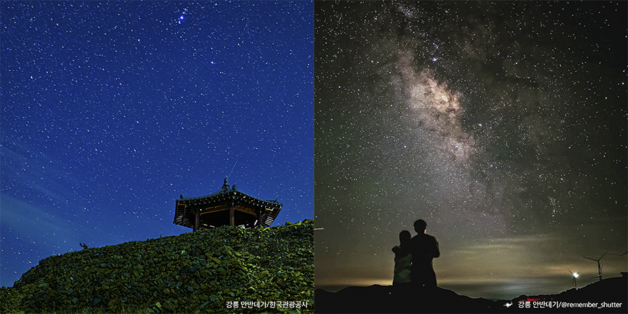
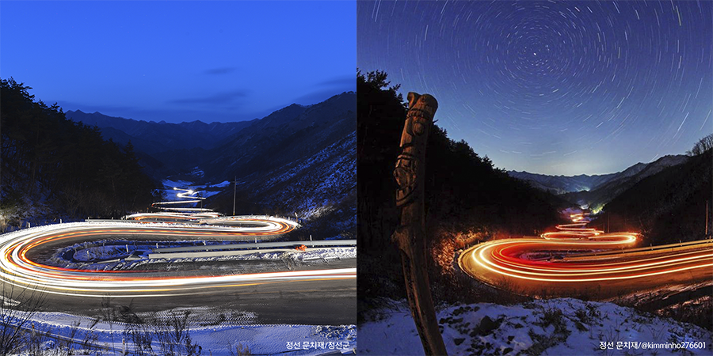
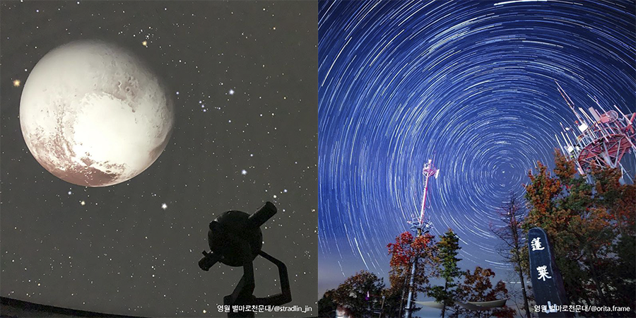

나랑 별보러 갈래? 강원도 별보기 명소!
나는 요즘, 북적북적한 여행보다는 사람이 없는 한적한 곳으로 떠나고 싶은 이들을 위한 안성맞춤 여행지를 소개한다.
쏟아지는 별과 은하수를 찾아 떠날 수 있는 여행지로 떠나보자.
<참고 강원네이처로드 매거진>
저녁 야경 드라이브 명소 여행 매거진 - 강원네이처로드

1. 강릉 안반데기 (강원네이처로드 6코스 바다 드라이브길)
강원도 강릉시 왕산면 안반덕길 428
강릉에는 해발 1,100m의 고산지대에 위치해 '하늘 아래 첫 동네'라고 불리는 안반데기가 있다.
전국 최대 규모의 고랭지채소 단지인 이곳에서 차박을 하며 별과 은하수를 볼 수 있어 관광 명소로 유명해졌다.
안반데기 '멍에전망대'까지 올라가게 된다면 별을 더욱 제대로 감상할 수 있으니 청정지역에서 별 보기에 더할 나위 없이 좋은 곳이다.

2. 정선 문치재 (강원네이처로드 5코스 깊은 산 드라이브길)
강원도 정선군 화암면 화암리
해발 1,000m가 넘는 산에 둘러싸인 문치재는 열두 굽이로 꺾어지는 정선의 드라이브 코스로 유명하다.
밤이 되면 도로 정면에 북극성이 보여 별 궤적을 찍으러 오는 명소이다.

3. 영월 별마로천문대 (강원네이처로드 4코스 굽이굽이 드라이브길)
강원도 영월군 영월읍 천문대길 397
별 관측 일수가 국내 평균 100일인데 비해 영월은 160일~190일에 달하는 별이 쏟아지는 지역이다.
'별이 보이는 고요한 정상'이라는 뜻을 가진 영월의 대표적인 명소 '별마로 천문대'는 시민천문대 최상의 조건인 해발 799.8m에 자리하고 있다.
별마로 천문대의 진입로의 이름마저 아름다운 '밤하늘 가는 길'로 이번 겨울은 시와 별, 동강이 흐르는 영월로 떠나보는 것을 추천한다.